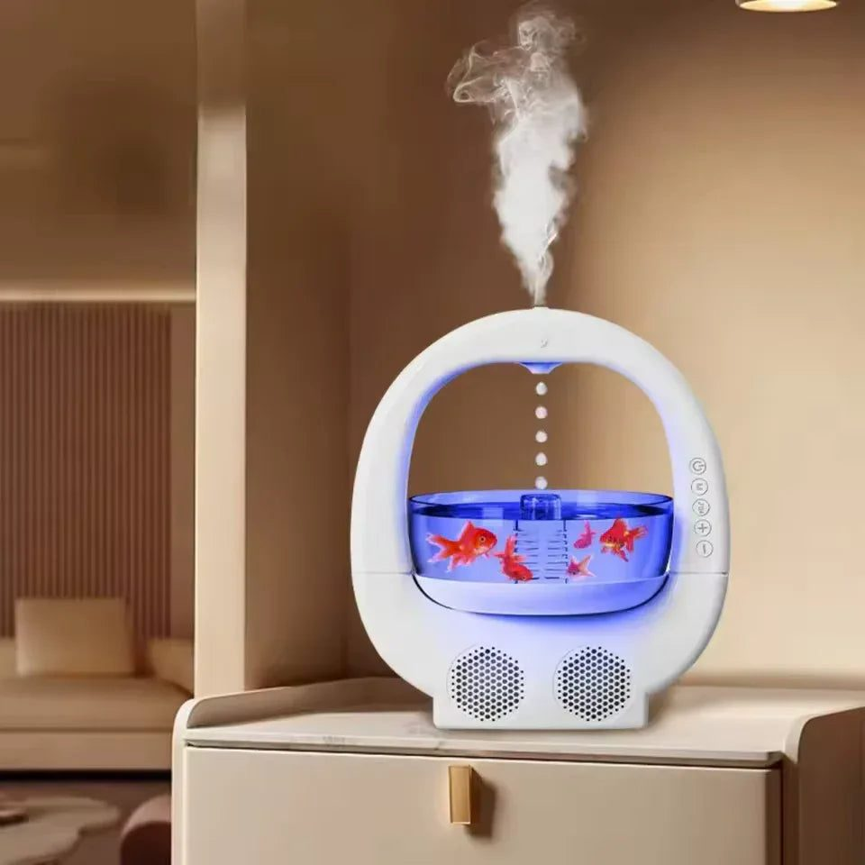

Stress, heat, smog and screens all disturb sleep in Pakistan's cities. Here is how a simple bedtime routine with a diffuser or humidifier can help you rest better.

Many people in Pakistan sleep badly. Long work hours, late dinners, traffic stress, phones in bed, summer heat, winter smog and the occasional load shedding all take their toll. Doctors recommend seven to nine hours of sleep for adults, but many get far less, and wake up tired. Medication is not the first answer for most people. Small, consistent changes in the bedtime routine often help more.
One gentle addition to that routine is an aroma diffuser or humidifier. This guide explains how they help, how to use them safely, and how they fit into a wider plan for better sleep.
A humidifier adds moisture to the air. This matters in dry seasons and in air-conditioned or heated rooms, where dry air causes scratchy throats, blocked noses and dry skin, all of which disturb sleep. An aroma diffuser disperses a fine mist with a few drops of essential oil, adding a gentle scent to the room. Many modern devices do both, and some include soft lights or soothing designs that make them pleasant to look at as you wind down.
Scent is personal, but some oils are widely associated with relaxation:
Use only a few drops; a strong scent can cause headaches. Some people prefer the traditional bakhoor or oud burned in a mabkhara in the evening, a custom common in many Pakistani homes, especially on Fridays. Both diffusers and incense burners are found at Trenducts.pk, which carries a range of humidifiers, diffusers and burners.
Place the device on a flat, stable surface away from the bed's edge and out of reach of children and pets. Use clean or filtered water and empty the tank every morning, because standing water grows bacteria and mould. Clean the tank weekly with diluted vinegar. Keep incense burners away from curtains and never leave burning coals unattended. People with asthma should be cautious with strong scents and smoke.
A diffuser works best as part of a routine. Try this sequence about an hour before bed:
Doing the same steps every night trains the body to recognise that sleep is coming.
In winter, when heaters run and Lahore's smog keeps windows shut, the air becomes very dry. A humidifier helps significantly. In humid Karachi summers, a humidifier is usually unnecessary, but a diffuser with a light scent and a fan can still be part of the routine. During monsoon, avoid adding extra moisture, which can encourage mould.
Diffusers help, but they cannot fix everything. Avoid caffeine after the afternoon, including strong tea, which many Pakistanis drink late in the evening. Eat dinner at least two hours before bed. Keep a consistent sleep and wake time, even on weekends. Get some sunlight in the morning. If you snore loudly, wake up gasping or feel exhausted despite enough hours, see a doctor.
Clutter, bright lights and screens make a bedroom feel busy. Keep the bedroom simple: clean bedsheets, soft lighting, blackout curtains if streetlights are bright, and minimal electronics. A pleasant-looking diffuser can become a small focal point that signals calm.
Better sleep comes from many small habits working together. A diffuser or humidifier, used safely, adds moisture and calming scent to a nightly wind-down routine. Pair it with dim lights, no phones, light dinners and a regular schedule, and you may find yourself falling asleep faster and waking up more refreshed.